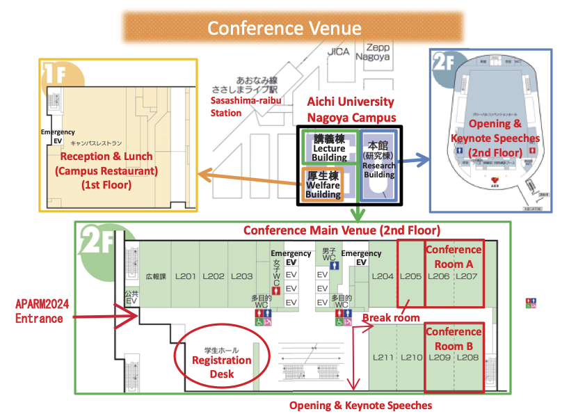

APARM 2024
The 11th Asia-Pacific International Symposium on Advanced Reliability and Maintenance Modeling
August 26-30, 2024
Nagoya Campus, Aichi University, Nagoya City, Japan
APARM 2024
The 11th Asia-Pacific International Symposium on Advanced Reliability and Maintenance Modeling
August 26-30, 2024
Nagoya Campus, Aichi University, Nagoya City, Japan
APARM2024 (The 11th Asia-Pacific International Conference on Advanced Reliability and Maintenance Modeling) is the biennial reliability conference in the Asia-Pacific region. Its purpose is to share advanced knowledge and information related to reliability and maintenance. Reliability and maintenance is the technology required in various fields such as power systems, communication networks, transportation, cloud computing, electronic systems, buildings and infrastructure, medical and healthcare, aviation and railway systems. It is also the foundation of a sustainable society. The goal of this conference is to bring together reliability researchers from the Asia-Pacific region to discuss and explore solutions to the various reliability challenges facing society.
24 August 2024
Information for participants
23 August 2024
Session schedule is updated.
16 August 2024
The earthquake warning that had been in effect since August 8 was lifted on August 15. APARM2024 will be held at the scheduled date and place. If you are not participating in APARM2024 due to the earthquake warning, please contact us (aparm2024-secretary@ml.hiroshima-u.ac.jp).
2 August 2024
Session schedule is updated.
31 July 2024
Session schedule is updated.
30 July 2024
The informaion on the special issue: Mathematics in Advanced Reliability and Maintenance Modeling is uploaded.
24 July 2024
Session schedule is uploaded.
9 July 2024
Program is updated.
12 June 2024
The payment system is now open. You will receive detailed information via email after registering your information on the registration page.
5 June 2024
Special issue information is updated on publication page.
31 May 2024
The camera-ready submission on the top page and the publication page are updated.
30 May 2024
The registration page is opened.
13 Apr. 2024
The submission deadlines for both full and abstract papers are extended to May 15, 2024.
27 Mar. 2024
The tetative schedule on the program page is updated.
22 Dec. 2023
The 2nd call for papers.
01 Sep. 2023
The 1st call for papers.
01 Aug. 2023
Website is opened.
There are two ways to reach the venue: (i) a 10-minute walk from Nagoya Station, or (ii) a few minute walk from Sasashima-raibu Station on the Aonami Line. Please refer to the following maps link below for more details:
Google map from Nagoya station
Google map from Sasashima-raibu Station on the Aonami Line
Baidu map from Sasashima-raibu Station on the Aonami Line
Registration will take place on Monday, August 26, from 4:00 PM at the Registration Desk area indicated on the floor map. Please enter through the APARM2024 Entrance. The Welcome Reception will also be held from 4:00 PM to 6:00 PM on the same day at the Campus Restaurant. Light snacks and drinks will be provided, so please feel free to join us. For a smoother registration process, please provide your registration number at the desk (please see the email sent to you for your registration number).

Presentations, whether they are Full Papers or Abstract Papers, will each be allotted 20 minutes, including Q&A. Since the presentations will be streamed online via Zoom, we recommend that presenters connect to the venue's WiFi, log in to Zoom, and share their screens for a smooth presentation process. PCs for streaming will be available in the venue, and you are welcome to use it directly for your presentation.
Lunch will be provided at the Campus Restaurant from 12:00 PM to 2:00 PM every day from August 27th to 30th. Lunch tickets will also be distributed at the registration desk, so please remember to bring your ticket with you to the Campus Restaurant.
The banquet will be held at The Strings Hotel on Thursday, August 29, starting at 6:00 PM. Banquet tickets will be distributed at the registration desk, so please bring your ticket with you to The Strings Hotel.
The excursion will take place on Friday, August 30, starting at 1:30 PM with the following schedule. Those who responded "Yes" in the registration should gather in front of the Registration Desk at 1:20 PM on Friday, August 30. Since there is space for up to 100 participants, those who responded "I have not decided yet" or "No" can sign up on the paper list that will be available at the Registration Desk.
A typhoon has formed in the southern seas of Japan, and it is forecasted to make landfall in Japan on Wednesday, August 28. While the event is scheduled to proceed as planned, please be aware that changes to the program may occur depending on the typhoon's path.